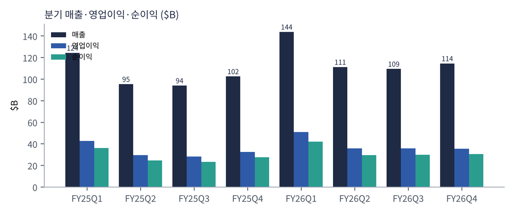
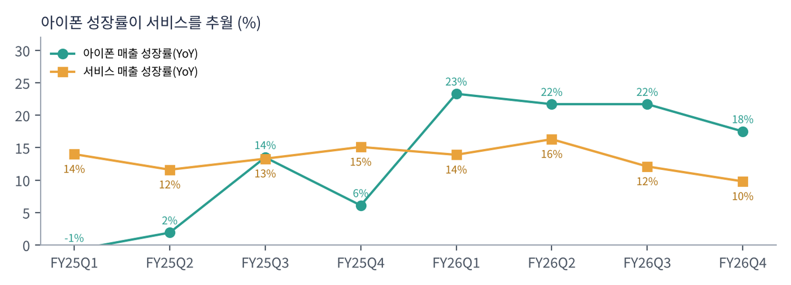
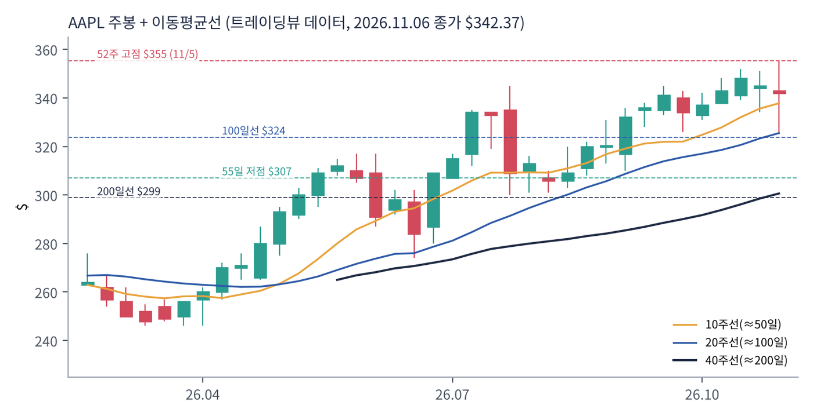
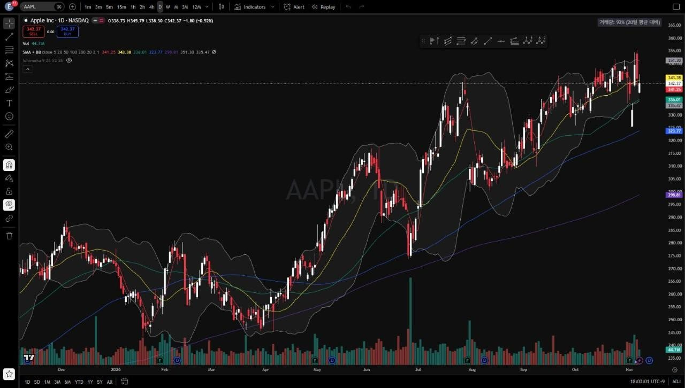
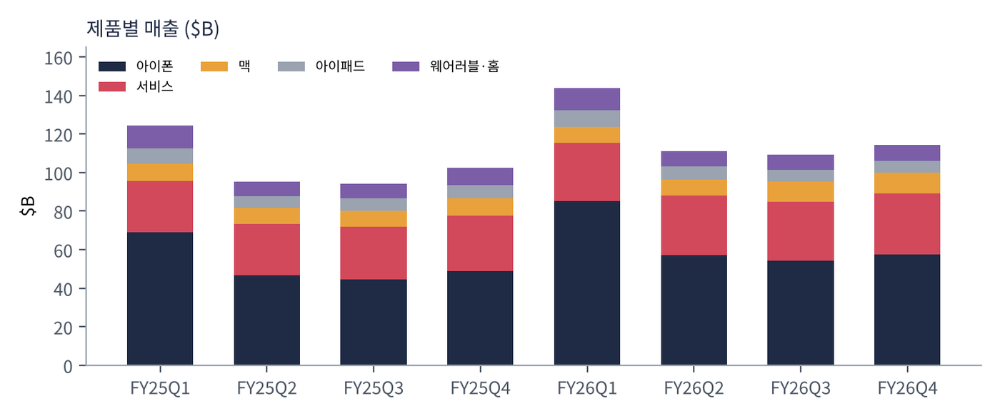

애플은 아이폰·맥·아이패드·웨어러블을 만들고, 그 위에서 앱스토어·아이클라우드·애플뮤직·애플페이 같은 서비스를 판다. 하드웨어 매출의 절반 이상이 아이폰이고, 이익의 40% 이상이 서비스에서 나온다.
| 항목 | 내용 |
|---|---|
| 종목 | Apple Inc. (AAPL) · 통신장비·소비자 전자 · 1976년 설립 · 본사 캘리포니아주 쿠퍼티노 |
| 경영진 | 존 테르누스 CEO(2026년 9월 취임) / 케반 파렉 CFO / 사비 칸 COO |
| 시가총액 | 약 $4.98T (11/6 종가 기준) |
| 최근 분기(FY26Q4) | 매출 $114.5B(+12%), 영업이익 $35.6B, 순이익 $30.7B, EPS $2.10(관세 환급 효과 $0.05 포함) |
| 밸류에이션 | TTM PER 37.7배 — 빅테크 중 가장 높은 축 |
| 주주환원 | FY26Q4 약 $28B(영업현금흐름 $28B와 같은 규모). 분기 배당 주당 $0.27 |
| 분기 (종료월) | 매출 | YoY | 매출총이익률 | 영업이익 | 순이익 | EPS | 아이폰 | 서비스 |
|---|---|---|---|---|---|---|---|---|
| FY25Q1 (24.12) | $124.3B | +4% | 46.9% | $42.8B | $36.3B | $2.40 | $69.1B | $26.3B |
| FY25Q2 (25.3) | $95.4B | +5% | 47.1% | $29.6B | $24.8B | $1.65 | $46.8B | $26.6B |
| FY25Q3 (25.6) | $94.0B | +10% | 46.5% | $28.2B | $23.4B | $1.57 | $44.6B | $27.4B |
| FY25Q4 (25.9) | $102.5B | +8% | 47.2% | $32.4B | $27.5B | $1.85 | $49.0B | $28.8B |
| FY26Q1 (25.12) | $143.8B | +16% | 48.2% | $50.9B | $42.1B | $2.84 | $85.3B | $30.0B |
| FY26Q2 (26.3) | $111.2B | +17% | 49.3% | $35.9B | $29.6B | $2.01 | $57.0B | $31.0B |
| FY26Q3 (26.6) | $109.4B | +16% | 50.1% | $35.7B | $29.8B | $2.02 | $54.3B | $30.7B |
| FY26Q4 (26.9) | $114.5B | +12% | 47.9% | $35.6B | $30.7B | $2.10 | $57.6B | $31.6B |

FY26은 아이폰의 해였다. FY25 아이폰 매출 성장률은 -1% ~ +14%에 머물렀지만 FY26에는 4개 분기 모두 +17% 이상이었다. 같은 기간 서비스 성장률은 +10~16%로 꾸준했다. 애플은 보통 '서비스가 이끄는 회사'로 불리지만, 이번 1년은 하드웨어 교체 주기가 성장의 중심이었다. 맥도 FY26Q3·Q4에 +29%·+24% 늘었다.
매출총이익률 50.1%는 착시가 섞여 있다. FY26Q3 매출총이익률에는 약 2%p, Q4에는 약 1%p의 관세 환급 효과가 들어 있다. CFO는 이를 빼면 Q4 매출총이익률이 Q3보다 약 1%p 낮아졌고 "원인은 전부 메모리"였다고 설명했다(콜, 보도). 제품 매출총이익률은 37.2%로 Q3(40.1%)보다 2.9%p 떨어졌다.

| 항목 | 가이던스 | 비교 |
|---|---|---|
| 매출 | 전년 대비 +7~10% (약 $154~158B) | 회사 사상 최대 분기 예상. "제한된 공급에 대한 최선의 전망" |
| 서비스 매출 | +8~9% | 시장 예상(+10.7%)보다 낮음 |
| 매출총이익률 | 45~46% | Q4 47.9%에서 하락. 메모리 가격 + Siri AI 클라우드 비용 |
| 영업비용 | $20.4~20.8B |
트레이딩뷰 AAPL 일봉 300개(2025.8 ~ 2026.11.6)와 주봉으로 계산했다. 결론부터 말하면 이번 보고서 12개 종목 중 마이크로소프트와 함께 추세가 가장 건강하다. 반도체 급락장에서 오히려 신고가를 찍었다.


위: 주봉 재구성 차트. 아래: 트레이딩뷰 일봉 캡처(작도 없이 이동평균선·볼린저밴드만 표시).
| 이동평균 | 값 | 종가 대비 | 해석 |
|---|---|---|---|
| 5일선 | $341.3 | +0.3% | 11/5 신고가 후 되돌림 |
| 20일선 | $343.4 | -0.3% | 주가가 20일선에 걸쳐 있음 — 단기 방향 결정 구간 |
| 50일선 | $336.0 | +1.9% | 9월 이후 지지선. 11/4 장중 이탈 후 회복 |
| 100일선 | $323.8 | +5.7% | 8월 박스 상단과 겹침 |
| 200일선 | $298.8 | +14.6% | 꾸준히 우상향 |
배열은 주가 ≈ 20일 > 50일 > 100일 > 200일의 정배열이다. 1~3월 $243~281 박스에서 4월 이후 추세 상승으로 전환했고, 7월 말 실적 발표 전후 조정($300)을 거쳐 9월부터 다시 신고가 행진을 했다. 11월 첫 주는 주봉 고가 $355, 저가 $325로 변동폭이 컸다. 실적 발표(11/2) 직후 메모리 비용 우려로 밀렸다가 11/5 신고가를 찍고 다시 내려왔다.
| 규칙 | 기준 | 현재 값 | 신호 |
|---|---|---|---|
| 장기 추세 필터 | 종가 vs 200일선 | $342.4 > $298.8 | 매수 |
| 중장기 교차 | 50일선 vs 200일선 | $336.0 > $298.8 | 매수 |
| 단기 교차 | 20일선 vs 50일선 | $343.4 > $336.0 | 매수 |
| 돈키언 채널 | 55일 고가·저가 | 11/5 $355.4로 55일·52주 신고가 | 매수 |
| 1개월 모멘텀 | 21거래일 수익률 | +0.6% (기준 $340.4) | 매수(약) |
| 3개월 모멘텀 | 63거래일 수익률 | +11.1% (기준 $308.3) | 매수 |
| 6개월 모멘텀 | 126거래일 수익률 | +16.7% (기준 $293.3) | 매수 |
| 12개월 모멘텀 | 252거래일 수익률 | +26.7% (기준 $270.1) | 매수 |
| 종합 (8개 평균) | +1.00 | 풀 롱 | |
해석: 8개 신호가 모두 매수다. 추세추종 자금 입장에서는 반도체에서 뺀 돈을 옮길 수 있는 '대형 기술주 중 안전한 추세'가 애플과 마이크로소프트뿐이다. 다만 1개월 모멘텀은 기준가 대비 +0.6%에 불과해 $340 아래로 내려가면 바로 매도로 바뀐다. 14일 ATR은 $9.0(주가의 2.6%)로 반도체 종목들의 3분의 1 수준이다.
| 가격 | 무엇이 바뀌나 | 의미 |
|---|---|---|
| $355 종가 돌파 | 신고가 영역 재진입 | 추세 가속. 저항 없음 |
| $340 ~ 343 | 1개월 기준가 + 20일선 | 종가 이탈 시 1M 매도 전환(+1.00 → +0.75) |
| $336 | 50일선 | 이탈 시 20/50 교차 위험 — 단기 추세 훼손 |
| $308 | 3개월 기준가·55일 저점($307) | 중기 추세 이탈선 |
| 구분 | 가격대 | 근거 |
|---|---|---|
| 저항 | $355 | 11/5 사상 최고가 |
| 지지 1 | $336 ~ 343 | 20·50일선 |
| 지지 2 | $324 ~ 331 | 100일선, 11/4 장중 저점 $325 |
| 지지 3 | $299 ~ 307 | 200일선, 55일 저점 |
기본 판단: 상승 추세 안의 숨 고르기. 펀더멘털(사상 최대 연말 분기 가이던스)과 추세(CTA 만점)가 같은 방향이다. 걱정은 밸류에이션(PER 38배)과 메모리 비용에 따른 이익률 하락이다. 신고가 바로 아래에서 추격하기보다 50~100일선 눌림을 기다리는 것이 손익비가 좋다.
| 가격대 | 시나리오 | 대응 |
|---|---|---|
| $375 이상 | 추세 가속 | 2차 익절, 잔여 추세 추종 |
| $355 종가 돌파 | 신고가 | 돌파 진입, 손절 $336 |
| $324 ~ 336 | 정상 눌림 | 눌림 진입 50% |
| $316 이하 종가 | 중기 추세 훼손 | 손절 |
| $299 ~ 307 | 200일선 | 관망, 지지 확인 후 재검토 |

| 매출원 | 돈을 버는 방식 | FY26Q4 | 성장 |
|---|---|---|---|
| 아이폰 | 아이폰 18 프로·프로 맥스(9월 출시), 아이폰 17, 폴더블 아이폰 듀오(10/23 출시, $1,999부터 — Q4 매출에는 미포함) | $57.6B | +17% |
| 서비스 | 앱스토어 수수료, 아이클라우드·애플뮤직·TV+ 구독, 애플케어, 애플페이, 검색 제휴(구글) 수익. 매출총이익률 76% | $31.6B | +10% |
| 맥 | 맥북·아이맥·맥 스튜디오. 처음으로 터치스크린 맥 출시 | $10.8B | +24% |
| 웨어러블·홈·액세서리 | 애플워치·에어팟·비전 프로·새 홈 하드웨어 | $8.3B | -8% |
| 아이패드 | 아이패드 전 라인업 | $6.2B | -10% |
두 개의 엔진이 다른 마진으로 돈을 번다. FY26Q4 제품 매출 $82.9B의 매출총이익률은 37.2%, 서비스 $31.6B는 76.0%다. 서비스는 매출의 28%지만 매출총이익의 약 44%를 낸다. 메모리 가격이 오르면 제품 마진만 깎이고 서비스 마진은 영향이 거의 없다. 애플이 메모리 충격을 다른 하드웨어 회사보다 잘 견디는 이유다.
중화권이 돌아왔다. 중화권 매출은 FY25에 감소와 정체를 반복했지만, FY26에는 $25.5B(+38%), $20.5B(+28%), $18.8B(+22%), $17.5B(+21%)로 크게 늘었다. 반대로 일본은 Q4에 유일하게 줄어든 지역이었고, 인도는 사상 최대 매출을 냈다(콜, 보도).
애플의 전략은 수십 년째 같다. 하드웨어·소프트웨어·서비스를 직접 통합해 '가장 좋은 사용자 경험'을 만들고, 그 경험에 묶인 수십억 명의 사용자에게 계속 돈을 받는 것이다. FY26Q4 발표문에서 CFO는 "높은 고객 만족도와 충성도 덕분에 모든 주요 제품군·지역에서 활성 기기 수가 사상 최고"라고 밝혔다.
| 축 | 최근 움직임 |
|---|---|
| 새 리더십 | 2026년 9월 하드웨어 엔지니어링 출신 존 테르누스가 CEO로 취임. 첫 실적 발표에서 "가장 야심 찬 라인업"을 강조 |
| 폼팩터 혁신 | "오리지널 아이폰 이후 가장 혁신적인 아이폰" 아이폰 듀오(폴더블), 처음으로 터치를 넣은 맥, 새 홈 하드웨어 세대 |
| AI | '완전히 새로운 Siri AI'. 개인정보 보호형 클라우드(Private Cloud Compute)에서 일부 연산 — 엔비디아는 자사 GPU가 애플 PCC의 기밀 추론에 쓰인다고 밝힘 |
| 가격 결정력 | 아이폰 18 프로 출시와 함께 아이폰 17 가격을 $100 올리고 일부 맥북 가격도 인상해 메모리 비용 일부를 전가 |
애플은 AI 반도체 회사들과 정반대 위치에 있다. 엔비디아·마이크론·SK하이닉스가 AI 인프라에 칩을 팔 때, 애플은 그 인프라가 만든 메모리 부족의 비용을 낸다. 대신 AI를 '팔리는 기기'로 바꾸는 능력, 즉 소비자가 새 아이폰을 사게 만드는 힘이 애플의 해자다. 새 Siri AI와 아이폰 듀오가 그 시험대다.
| 주제 | 회사의 말 (발표문·콜 보도) | 읽는 법 |
|---|---|---|
| 연말 수요 | 12월 분기 매출 +7~10%, "회사 역사상 최고의 매출 분기"를 예상. 제한된 공급을 반영한 전망 | 수요가 공급보다 큼 |
| 아이폰 듀오 | "현재 공급이 제약돼 있고, 수요와 공급이 언제 균형을 이룰지 예측하기 어렵다"(사비 칸 COO). 256GB 모델은 사전 예약 몇 시간 만에 매진(트레이딩뷰 보도) | 첫 폴더블의 흥행 |
| 메모리 가격 | "지금 메모리 가격은 전례가 없다." 12월 분기 메모리 비용은 더 오르고, 그 이후에도 계속 상승할 것(테르누스 CEO) | 메모리 3사 실적의 반대편 |
| 공급 제약 | 메모리 때문에 이번 분기 맥·아이패드 공급도 제한될 것. 공급 확보 조치는 해 둠 | 매출 상방을 막는 요인 |
| 마진 | 12월 분기 매출총이익률 45~46% — 하락분 대부분은 메모리, 일부는 Siri AI 클라우드 비용(파렉 CFO) | AI 비용이 원가로 들어오기 시작 |
이 표는 메모리 업체 리포트와 같이 읽어야 한다. SK하이닉스가 "D램 ASP 20%대 후반 상승", 삼성이 "전 응용 가격 상승"을 말하는 바로 그 가격을 애플이 낸다. 세계 최대 메모리 고객 중 하나가 "가격이 12월 이후에도 오른다"고 공개적으로 말한 것은 메모리 업황에 대한 가장 강한 수요 측 확인이기도 하다.
FY26 아이폰 매출은 $254.1B(+21%)로 사상 최대다. 18 프로 판매는 Q4에 8~9일만 반영됐고, 듀오는 FY27Q1부터 들어온다. 고가 폴더블($1,999~)이 평균 판매가격을 끌어올릴 전망이다.
사상 최대지만 성장률은 +16%(Q2) → +12%(Q3) → +10%(Q4)로 둔화 중이고, 다음 분기 가이던스도 +8~9%다. 앱스토어 규제와 검색 제휴 수익의 불확실성이 이어진다.
Q3 +29%, Q4 +24%로 2개 분기 연속 고성장. 로컬 AI용 고사양 맥 수요와 터치 맥이 이끈다. 다만 메모리 탑재량이 큰 제품이라 원가 부담이 가장 크다.
각각 -10%, -8%로 감소. 회사는 맥·아이패드 수요가 예상보다 강하지만 메모리 때문에 공급이 막혔다고 설명했다(콜, 보도).
| 리스크 | 내용 | 강도 |
|---|---|---|
| 메모리 원가 | "전례 없는" 가격 상승이 FY27 내내 이어질 가능성. 제품 마진 37% → 추가 하락 | 높음 |
| 밸류에이션 | PER 38배. 이익률이 내려가는 국면에서 높은 배수 유지 부담 | 중간 |
| 공급 제약 | 듀오·맥·아이패드 공급 부족 → 매출 이연 | 중간 |
| 규제 | 앱스토어 수수료, 검색 기본값 계약에 대한 각국 규제 | 중간 |
| AI 경쟁 | 새 Siri AI의 완성도, 안드로이드 진영의 AI 기기 경쟁 | 참고 |
1월 말 FY27Q1 실적에서 '사상 최대 분기'와 아이폰 듀오 판매량이 확인될 것이다. 주가는 추세가 가장 강한 대형주로 반도체 매도 자금의 피난처 역할을 하고 있다. 위험은 이익률 가이던스가 더 낮아지는 경우다.
폴더블과 AI Siri가 새 교체 주기를 열면 아이폰 성장률 두 자릿수가 이어질 수 있다. 메모리 사이클이 꺾이는 2028년 전후에는 반대로 원가가 내려가 이익률이 회복되는 수혜를 본다 — 메모리 회사들과 반대 방향의 사이클이다.